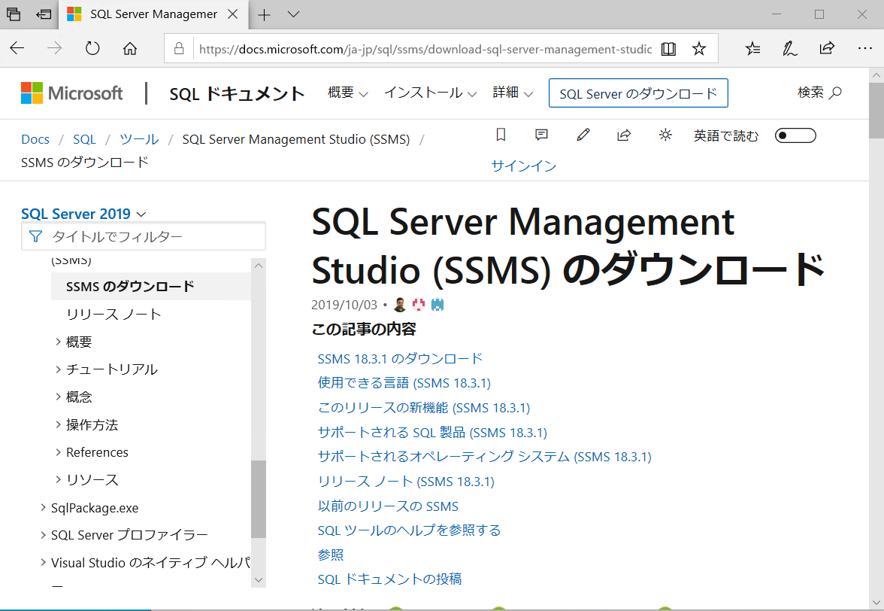
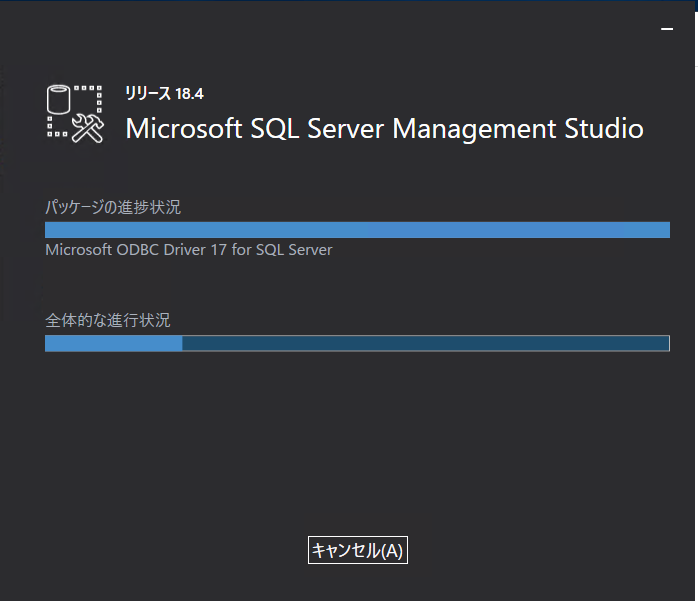
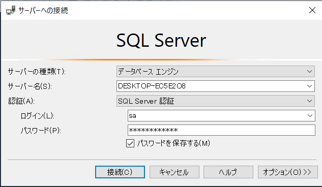

2.2. 関連ツールのインストール¶
SQL Server Management Tool は事前にインストールをする必要があります。
なお、以下のツールは便利なツールを紹介しています。特に必須ではないため、スキップしても問題ありません。
ブラウザに関しては好みに合わせてご利用ください。
2.2.1. ダウンロードに関しての設定¶
Windows Server 2019 (2016 も含む）において、標準でインストールされているブラウザの Internet Explorer はセキュリティを強化するためにダウンロード機能が無効となっています。ここでは有効にする手順を紹介します。
サーバーマネージャーを起動します
{kind=link}
左のメニューから「ローカルサーバー」を選択します。
{kind=link}
サーバーのプロパティから IE セキュリティ強化の構成 の 有効 をクリックします
Administrator グループのセキュリティの設定を オフ にします。
{kind=link}
上記の設定をすることで、Internet Explorer でファイルのダウンロードができるようになります。
2.2.2. SQL Server Management Studio のインストール¶
SQL Server Management Studio は、マイクロソフトのサイトからダウンロードをすることができます。
{kind=link}
モジュールをダウンロードしたら、ダウンロードしたファイルをダブルクリックして、インストールを開始します。

暫くするとインストールが完了します。
{kind=link}
インストールが完了したあと、SQL Server Management Studio を起動します。ログイン画面が出てきますので、SQL Server をインストールしたときのパスワードを利用して、ログインしてください。
{kind=link}
2.2.3. Visual Studio Code 追加作業¶
Visual Studio Code は標準では英語の UI になっています。このため、日本語の UI をインストールします。
Visual Studio Code を起動します
左側のメニューにある Extensions をクリック、Japanese と入力すると、Japanese Language Pack for visual Studio Code が表示されます
{kind=link}
インストールが完了するとダイアログが表示され、Restart Now のボタンをクリックすると、Visual Studio Code の UI が日本語に切り替わります。